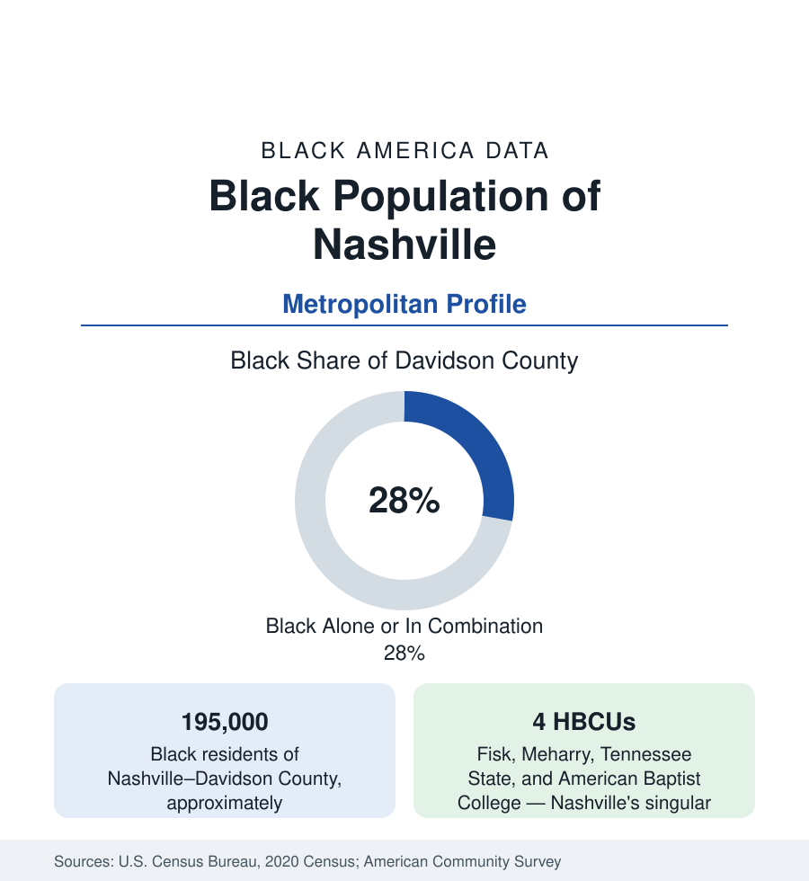

Black Cities
Black Nashville: Four HBCUs and Music City's Other Sound
Nashville holds about 195,000 Black residents in Davidson County — and the densest HBCU cluster in America relative to its size. The census profile.

Nashville–Davidson County holds about 195,000 Black residents — Black alone or in combination, roughly 28 percent of the consolidated city-county's 715,000 people — and the metropolitan area about 280,000. Nashville's Black profile is defined by an institutional concentration unmatched for a city its size: four historically Black institutions of higher education, including the nation's preeminent Black medical school, inside one county. Wrapped around that cluster is a growing, suburbanizing metro population in the South's boom economy. This article profiles it in the census data.
The Cluster: Fisk, Meharry, TSU, American Baptist
The education data make Nashville's distinctiveness arithmetic. Fisk University (founded 1866), home of the Jubilee Singers and a liberal-arts institution of national standing, enrolls under a thousand students with an alumni weight far beyond its size. Meharry Medical College (founded 1876) is the nation's largest private Black medical school and one of the top producers of Black physicians in the workforce data. Tennessee State University (founded 1912), the public land-grant HBCU, enrolls in the range of 8,000 to 9,000 and carries the broad-access mission. American Baptist College, the small theological institution whose students formed a disproportionate share of the sit-in movement's Nashville chapter, completes the four. Together they enroll well over 10,000 students in a single county, anchor the Jefferson Street corridor's history, and produce the Black professional class — above all the physicians — that the health-workforce data trace across the whole South.
Jefferson Street and North Nashville
The community's historic geography runs along Jefferson Street in North Nashville — the commercial and cultural spine built by the university cluster, its clubs and businesses forming Black Nashville's mid-century center — and through the districts around it (Germantown's Black blocks, Bordeaux, Hadley Park, the TSU neighborhood). The interstate's routing through the corridor in the 1960s took a documented share of its fabric, and the modern data show North Nashville in the two-speed pattern: the heritage institutions holding, new investment arriving at the corridor's downtown edge, the neighborhood indicators around them still at the difficult end of the county's tables. South Nashville's Black population is smaller and more dispersed; the suburban ring — Antioch above all, the vast southeast district — holds the metro's fastest-growing Black community, in the new subdivisions of the boom, with Madison and Donelson adding established layers.
Music City's Other Economy
Nashville's Black cultural economy predates its country brand: the Jubilee Singers carried the city's name worldwide in the 1870s, Jefferson Street's clubs ran a rhythm-and-blues circuit of national standing at mid-century, and the modern Black music economy — gospel's industry infrastructure (Nashville is a capital of the gospel recording business), publishing, and the National Museum of African American Music's downtown institution — is a documented layer of the city's signature industry. The broader Black workforce runs through health care (the metro's hospital-corporation headquarters economy), state government, logistics, and the tourism machine. Black median income in the metro runs near the middle of this section's Southern set, with the Antioch-and-suburbs homeowner data at the favorable end and North Nashville's tracts at the other.
Growth and Change
Nashville is one of the South's boomtowns, and its Black population grows with the metro — the estimates show steady gains concentrated in the suburban ring (Rutherford and Wilson counties' Black populations rising fastest in percentage terms) while Davidson County's Black share edges down from its historic levels toward the mid-twenties as total growth outruns it. The composition remains predominantly native-born and Southern-rooted, with growing African and Caribbean communities. The displacement data of the gentrifying near-north and east districts are the profile's live file — the corridor that built Black Nashville is now priced by Music City's boom, and each census re-measures the community's hold on its own historic ground.
Reading the Nashville Numbers
Nashville's 195,000 county residents hold a weight in Black America that the count understates: the physicians Meharry trains practice in every state of this reference, and the four-institution cluster makes the city a producer of Black professional life at a scale its population rank would never predict. Read Nashville as an institutional capital first and a population center second — the reverse of most profiles in this section, and the source of its distinctiveness.
More in Black Cities
Black Atlanta: Population, Distribution, and Growth of a Black Metropolis
Metro Atlanta holds more than two million Black residents — roughly one in three, second only to New York. The suburban distribution, migration history, and composition of Black Atlanta in the census data.
Black New York: The Largest Black Population in America
The New York metropolitan area holds about 3.4 million Black residents — more than any metro in the nation — and the city itself about two million. The census profile.
Black Washington: The District and the Metro
The Washington metro holds about 1.6 million Black residents, and the District itself — long a majority-Black city — now records a Black share near 41 percent. The census profile.
Source: U.S. Census Bureau, 2020 Census; American Community Survey; Population Estimates Program.